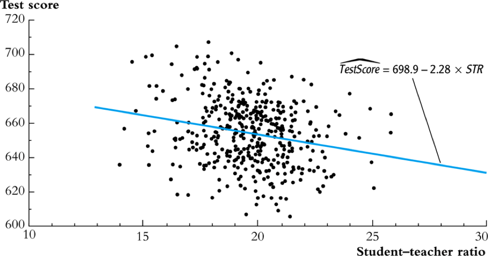

Lecture 6: Linear Regression with One Regressor
Table of Contents
1 Introduction
This lecture introduces a linear regression model with one regressor called a simple linear regression model. We will learn the ordinary least squares (OLS) method to estimate a simple linear regression model, discuss the algebraic and statistical properties of the OLS estimator, introduce two measures of goodness of fit, and bring up three least squares assumptions for a linear regression model. As an example, we apply the OLS estimation method to a linear model of test scores and class sizes in California school districts.
This lecture lays out foundations for all lectures to come. Although in practice we seldom use a linear regression model with only one regressor, the essential principles of the OLS estimation method and hypothesis testing are the same for a linear regression model with multiple regressors.
2 The Linear Regression Model
2.1 What is regression?
Definition of regress in Merriam-Webster's dictionary
Merriam-Webster gives the following definition of the word "regress":
- An act or the privilege of going or coming back
- Movement backward to a previous and especially worse or more primitive state or condition
- The act of reasoning backward
The meaning of regression in statistics?
In statistical modeling, regression analysis is a statistical process for estimating the relationships among variables.1 Specifically, most regression analysis focus on the conditional mean of the dependent variable given the independent variables, which is a function of the values of independent variables.
A very simple functional form of a conditional expectation is a linear function. That is, we can model the conditional mean as follows,
\begin{equation} \label{eq:genpopreg} \mathrm{E}(Y \mid X = x) = f(x) = \beta_{0} + \beta_1 x \end{equation}Equation \ref{eq:genpopreg} is called a simple linear regression function.
2.2 An example: Test scores versus class size
Let's go back to the example of California school districts, introduced in Lecture 1.
Research question:
The research question of this application is: Can reducing class size increase students' test scores?
How can we answer the question?
- We randomly choose 42 students and divide them into two classes, with one having 20 students and another having 22. And they are taught with the same subject and by the same teachers.
- Randomization ensures that it is the difference in class sizes of the two classes that is the only factor affecting test scores.
After a test for both classes, we then compute the average test scores that can be expressed as,
\begin{gather*} \mathrm{E}(TestScore | ClassSize = 20) \\ \mathrm{E}(TestScore | ClassSize = 22) \end{gather*}Then the effect of class size on test scores is the difference in the conditional means, i.e.,
\begin{equation*} \mathrm{E}(TestScore | ClassSize = 20) - \mathrm{E}(TestScore | ClassSize = 22) \end{equation*}- If the difference is large enough, we can say that reducing class can improve students' test performance.
A simple linear regression model of test scores v.s. class size
As mentioned above, a simple linear regression function can be used to describe the relationship between test scores and class sizes. Since it regards the association between these two variable for the whole population, we call this regression function as the population regression function or the population regression line, taking the following form,
\begin{equation} \label{eq:popreg-testscore} \mathrm{E}(TestScore | ClassSzie) = \beta_0 + \beta_1 ClassSize \end{equation}By calculating the conditional expectation, some other factors, apart from class sizes, are left out of the population regression function. Although these factors may also influence test scores, they are either unimportant in your reasoning or unable to be measured. We can lump all these factors into a single term, and set up a simple linear regression model as follows,
\begin{equation} \label{eq:regmodel-testscore} TestScore = \beta_0 + \beta_1 ClassSize + OtherFactors \end{equation}If we assume \(\mathrm{E}(OtherFactors | ClassSize) = 0\), then the simple linear regression model (Eq. \ref{eq:regmodel-testscore}) becomes the population regression line (Eq. \ref{eq:popreg-testscore}).
A distinction between the population regression function and the population regression model
Note that here we have two concepts: the population regression function and the population regression model. What's their difference? Simply put,
- A population regression function gives us a deterministic relation between class size and the expectation of test scores. That is, when we have a value of class size and know the values of \(\beta_0\) and \(\beta_1\), there is one and only one expected value of test scores associated with this class size. However, we cannot compute the exact value of the test score of a particular observation.
- A population regression model, by including other factors, gives us a complete description of a data generating process (DGP). That is, when we have all the values of class sizes and other factors and know \(\beta_0\) and \(\beta_1\), we can generate all the values of test scores. Also, when we consider other factors as a random variable, the association between test scores and class size is not deterministic, depending on the value of other factors.
An interpretation of the population regression model
Now we have set up the simple linear regression model,
\begin{equation*} TestScore = \beta_0 + \beta_1 ClassSize + OtherFactors \end{equation*}What is \(\beta_1\) and \(\beta_0\) represent in the model?
- Interpret \(\beta_1\)
Let's first look at \(\beta_1\). When we hold other factors constant, the only reason for a change in test scores is a change in class size. Denote \(\Delta TestScore\) and \(\Delta ClassSize\) to be their respective change. According to the above regression model, holding other factors constant, we have \[ \Delta TestScore = \beta_1 \Delta ClassSize \] where \(\beta_0\) is removed because it is also a constant. Then, we get \[ \beta_1 = \frac{\Delta TestScore}{\Delta ClassSize} \] That is, \(\beta_1\) measures the change in the test score resulting from a one-unit change in the class size. When \(TestScore\) and \(ClassSize\) are two continuous variable, we can write \(\beta_1\) as \[\beta_1 = \frac{\mathrm{d} TestScore}{\mathrm{d} ClassSize} \] Hence, we often call \(\beta_1\) as the marginal effect of the class size on the test score.
The phrase of "holding other factors constant" is important. Without it, we cannot disentangle the effect of class sizes on test scores from other factors. "Holding other things constant" is often expressed as the notion of ceteris paribus.
- Interpret \(\beta_0\)
\(\beta_0\) is the intercept in the model. Sometimes it bears real meanings, but sometimes it merely presents as an intercept. In this regression model, \(\beta_0\) is the test score when the class size and other factors are all zero, which is obviously nonsensical. Thus, \(\beta_0\) does not have a real meaning in this model, and it just determines where the population regression line intersects the Y axis.
2.3 The general linear regression model
Let's generalize test scores and class sizes to be two random variables \(Y\) and \(X\). For both, there are \(n\) observations so that each observation \(i = 1, 2, 3, \ldots\) is associated with a pair of values of \((X_i, Y_i)\).
Then a simple linear regression model that associates \(Y\) with \(X\) is
\begin{equation} \label{eq:single-regress} Y_i = \beta_0 + \beta_1 X_i + u_i, \text{ for } i = 1, \ldots, n \end{equation}- \(Y_i\) is called the dependent variable, the regressand, or the LHS (left-hand side) variable.
- \(X_i\) is called the independent variable, the regressor, or the RHS (right-hand side) variable.
- \(\beta_{0}\) is the intercept, or the constant term. It can either have economic meaning or have merely mathematical sense, which determines the level of the regression line, i.e., the point of intersection with the Y axis.
- \(\beta_{1}\) is the slope of the population regression line. Since \(\beta_1 = \mathrm{d}Y_i/ \mathrm{d}X_i\), it is the marginal effect of \(X\) on \(Y\). That is, holding other things constant, one unit change in \(X\) will make \(Y\) change by \(\beta_1\) units.
- \(u_i\) is the error term. \(u_i = Y_i - (\beta_0 + \beta_1 X_i)\) incorporates all the other factors besides \(X\) that determine the value of \(Y\).
- \(\beta_{0} + \beta_{1}X_{i}\) represents the population regression function(or the population regression line).
2.4 An graphical illustration of a linear regression model
The relationship between the data points, the population regression line, and the errors (other factors) are illustrated in Figure 1.

Figure 1: The Population Regression Line
3 The OLS Estimation Method for a Linear Regression Model
3.1 The intuition for the OLS and minimization
The most commonly used method to estimate a linear regression model, like Equation \ref{eq:single-regress}, is the ordinary least squares (OLS) estimation.
Let's explain the basic idea of the OLS by dissecting its name.
- Ordinary
- It means that the OLS estimator is a very basic method, from which we may derive some variations of the OLS estimator, such as the weighted least squares (WLS), and the generalized least squares (GLS).
- Least
- It means that the OLS estimator tries to minimize something. The "something" is the mistakes we make when we try to guess (estimate) the values of the parameters in the model. From Equation \ref{eq:single-regress}, if our guess for \(\beta_0\) and \(\beta_1\) is \(b_0\) and \(b_1\), then the mistake of our guess is \(\hat{u}_{i} = Y_{i} - b_0 - b_1 X_i\).
- Squares
- It represent the actual thing (a quantity) that we minimize. The OLS does not attempt to minimize each \(\hat{u}_{i}\) but to minimize the sum of the squared mistakes, \(\sum_{i=1}^n \hat{u}_i^2\). Taking square is to avoid possible offsetting between positive and negative values of \(\hat{u}_i\) in \(\sum_i \hat{u}_i\).
3.2 The OLS estimators for \(\beta_0\) and \(\beta_1\)
Let \(b_0\) and \(b_1\) be some estimators of \(\beta_0\) and \(\beta_1\), respectively. 2 Then, the OLS estimator is the solution to the following minimization problem.
\begin{equation} \operatorname*{min}_{b_0, b_1}\: S(b_0, b_1) = \sum_{i=1}^n \hat{u}_i^2 = \sum_{i=1}^n (Y_i - b_0 - b_1 X_i)^2 \label{eq:min-ols} \end{equation}where \(S(b_0, b_1)\) is a function of \(b_0\) and \(b_1\), measuring the sum of the squared prediction mistakes over all \(n\) observation.
The mathematical derivation of the OLS estimators for \(\beta_0\) and \(\beta_1\)
We solve the problem by taking the derivative of \(S(b_0, b_1)\) with respect to \(b_0\) and \(b_1\), respectively. Suppose \(b_0^*=\hat{\beta}_0\) and \(b^*_1=\hat{\beta}_1\) are the solution to the minimization problem. Then the first order conditions evaluated at \((\hat{\beta}_0, \hat{\beta}_1)\) are
\begin{align} & \frac{\partial S}{\partial b_0}(\hat{\beta}_0, \hat{\beta}_1) = \sum_{i=1}^n (-2)(Y_i - \hat{\beta}_0 - \hat{\beta}_1 X_i) = 0 \label{eq:b-0} \\ & \frac{\partial S}{\partial b_1}(\hat{\beta}_0, \hat{\beta}_1) = \sum_{i=1}^n (-2)(Y_i - \hat{\beta}_0 - \hat{\beta}_1 X_i) X_i = 0 \label{eq:b-1} \end{align}Rearranging Equation \ref{eq:b-0}, we get
\begin{gather} \sum_{i=1}^n Y_i - n \hat{\beta}_0 - \hat{\beta}_1 \sum_{i=1}^n X_i = 0 \notag \\ \hat{\beta}_0 = \frac{1}{n} \sum_{i=1}^n Y_i - \frac{\hat{\beta}_1}{n}\sum_{i=1}^n X_i = \overline{Y} - \hat{\beta}_1 \overline{X} \label{eq:bhat-0} \end{gather}Rearranging Equation \ref{eq:b-1} and plugging Equation \ref{eq:bhat-0}, we get
\begin{gather} \sum_{i=1}^n X_i Y_i - \hat{\beta}_0 \sum_{i=1}^n X_i - \hat{\beta}_1 \sum_{i=1}^n X^2_i = 0 \notag \\ \sum_{i=1}^n X_i Y_i - \frac{1}{n}\sum_{i=1}^n X_i \sum_{i=1}^n Y_i + \hat{\beta}_1 \frac{1}{n} \left(\sum_{i=1}^n X_i\right)^2 - \hat{\beta}_1 \sum_{i=1}^n X_i^2 = 0 \notag \\ \hat{\beta}_1 = \frac{n\sum_{i=1}^n X_i Y_i - \sum_{i=1}^n X_i \sum_{i=1}^n Y_i}{n\sum_{i=1}^n X_i^2 - (\sum_{i=1}^n X_i)^2} \label{eq:bhat-1} \end{gather}For the numerator in Equation \ref{eq:bhat-1}, we can show the following
\begin{align*} \sum_i(X_i - \overline{X})(Y_i - \overline{Y}) &= \sum_i X_iY_i - \overline{X}\sum_iY_i - \overline{Y}\sum_iX_i + \sum_i \overline{X}\overline{Y} \\ &= \sum_i X_iY_i - 2n\overline{X}\overline{Y} + n\overline{X}\overline{Y} \\ &= \sum_i X_iY_i - n\overline{X}\overline{Y} \\ &= \frac{1}{n} \left(n\sum_i X_iY_i - \sum_i X_i \sum_i Y_i\right) \end{align*}Similarly, we can show that \(\sum_i (X_i - \overline{X})^2 = \frac{1}{n} \left[n\sum_i X_i^2 - (\sum_i X_i)^2\right]\).
\begin{equation*} \hat{\beta}_1 = \frac{\sum_{i=1}^n (X_i - \overline{X})(Y_i - \overline{Y})}{\sum_{i=1}^n (X_i - \overline{X})^2} \end{equation*}Since we know that the sample covariance of \(X\) and \(Y\) is \(s_{XY} = \frac{1}{n-1} \sum_{i=1}^n (X_i - \overline{X})(Y_i - \overline{Y})\) and the sample variance of \(X\) is \(s_X^2 = \frac{1}{n-1} \sum_{i=1}^n (X_i - \overline{X})^2\), the equation above can also be written as \[ \hat{\beta}_1 = \frac{s_{XY}}{s^2_X} \]
In sum, solving the minimization problem (Equation \ref{eq:min-ols}), we obtain the OLS estimators for \(\beta_0\) and \(\beta_1\) as
\begin{align} \hat{\beta}_1 & = \frac{\sum_{i=1}^n (X_i - \overline{X})(Y_i - \overline{Y})}{\sum_{i=1}^n (X_i - \overline{X})^2} = \frac{s_{XY}}{s^2_X} \label{eq:betahat-1} \\ \hat{\beta}_0 & = \overline{Y} - \hat{\beta}_1 \overline{X} \label{eq:betahat-0} \end{align}3.3 The predicted values, residuals, and the sample regression line
The predicted values
- After obtaining the estimators, we can compute the predicted values \(\hat{Y}_i\) for \(i=1, \ldots, n\) \[\hat{Y}_i = \hat{\beta}_0 + \hat{\beta}_1 X_i\]
- The line represented by the above equation is called the sample regression line.
- The sample average point \((\overline{X}, \overline{Y})\) is always on the sample regression line because, from Equation \ref{eq:betahat-0}, we have \[ \overline{Y} = \hat{\beta}_0 + \hat{\beta}_1 \overline{X} \]
The residuals
- The residuals \(\hat{u}_i\) for \(i = 1, \ldots, n\) are \[\hat{u}_i = Y_i - \hat{Y}_i\]
- The residuals are the difference between the observed values of \(Y_i\) and its predicted value. That is, they are the actual prediction errors we make when using the OLS estimators.
3.4 A comparison between the population regression model and the sample counterparts
We should pause here to make a clear distinction between the population regression function and model and their counterparts.
The population regression function versus the sample regression function
- The population regression function is a function between the conditional mean of \(Y\) given \(X\) and \(X\), that is, \[ E(Y \mid X) = \beta_0 + \beta_1 X_i \] where \(\beta_0\) and \(\beta_1\) are the population parameters.
- The sample regression function is a function between the predicted value and \(X\), that is, \[ \hat{Y}_i = \hat{\beta}_0 + \hat{\beta}_1 X_i \]
The regression errors versus residuals
- The error term, \(u_i\), in the population regression model represents the other factors that the population regression function does not take into account. It is the difference between \(Y_i\) and \(E(Y_i \mid X_i)\). Thus, we have \[Y_i = \beta_0 + \beta_1 X_i + u_i \]
- The residuals, \(\hat{u}_i\), represent the actual mistakes we make with a set of estimators. It is the difference between \(Y_i\) and its predicted value \(\hat{Y}_i\). Thus, we have \[Y_i = \hat{\beta}_0 + \hat{\beta}_1 X_i + \hat{u}_{i}\]
| Population | Sample | |
|---|---|---|
| Regression functions | \(\beta_{0} + \beta_{1}X_{i}\) | \(\hat{\beta}_0 + \hat{\beta}_1 X_i\) |
| Parameters | \(\beta_{0}\), \(\beta_{1}\) | \(\hat{\beta}_{0}\), \(\hat{\beta}_{1}\) |
| Errors vs residuals | \(u_{i}\) | \(\hat{u}_{i}\) |
| The regression model | \(Y_i = \beta_0 + \beta_1 X_i + u_i\) | \(Y_i = \hat{\beta}_0 + \hat{\beta}_1 X_i + \hat{u}_{i}\) |
3.5 The OLS estimates of the relationship between test scores and the student-teacher ratio
Let's come back to the application of test scores versus the student-teacher ratios in California school districts. The goal is to estimate the effect of class sizes, measured by the student-teacher ratios, on test scores. Before setting up a formal regression model, it is always a good practice to glance over the data using some exploratory data analysis techniques.
Exploratory analysis
- Basic summary statistics
We first need to compute basic summary statistics to see the sample distribution of the data. Some commonly used summary statistics include mean, standard deviation, median, minimum, maximum, and quantile (percentile), etc. Table 2 summarizes the distribution of test scores and class sizes for the sample.
Table 2: Summary Of distributions of student-teacher ratios and test scores Average S.t.d. 10% 25% 40% 50% 60% 75% 90% TestScore 654.16 19.05 630.4 640.05 649.07 654.45 659.4 666.66 678.86 STR 19.64 1.89 17.35 18.58 19.27 19.72 20.08 20.87 21.87 - Scatterplot
A scatterplot visualizes the relationship between two variables straightforwardly, which is helpful for us to decide what a functional form a regression model should properly take. Figure 2 shows that test scores and student-teacher ratios may be negatively related. The correlation coefficient between the two variables is -0.23, verifying the existence of a weak negative relationship.

Figure 2: The scatterplot between student-teacher ratios and test scores
Regression analysis
After exploratory analysis, we can estimate the linear model. Although the formula of computing \(\beta_1\) and \(\beta_0\) (Equations \ref{eq:betahat-1} and \ref{eq:betahat-0}) seems complicated, the practical estimation procedure is simplified by using computer software, like R. For now, let's simply present the estimation results in the following equation,
\begin{equation} \label{eq:testscr-str-1e} \widehat{TestScore} = 698.93 - 2.28 \times STR \end{equation}We can draw the sample regression line represented by Equation \ref{eq:testscr-str-1e} in the scatterplot to eyeball how well the regression model fits the data.

Figure 3: The estimated regression line for the California data
Interpretation of the estimated coefficients
Upon obtaining the coefficient estimates, what we need to do next includes hypothesis tests, model specification tests, robustness (or sensitivity) test, and interpretation. Let's first see how to correctly interpret the estimation results.
- Our main interest is in the slope that tell us how much a unit change in student-teacher ratios will cause test scores to change. The slope of -2.28 means that an increase in the student-teacher ratio by one student per class is, on average, associated with a decline in district-wide test scores by 2.28 points on the test.
- The intercept literally means that if the student-teacher ratio is zero, the average district-wide test scores will be 698.9. However, it is nonsense for having some positive test scores when the student-teacher ratio is zero. Therefore, the intercept term in this case merely serves as determining the level of the sample regression line.
- The mere number of -2.28 really does not make much sense for the readers of your research. We have to put it into the context of California school district to avoid ridiculous results even though the estimation itself is correct. (Read the discussion in the paragraphs in Page 117.)
4 Algebraic Properties of the OLS Estimator
The OLS estimator has many good properties. Let's first look at some of its algebraic properties. That is, these properties are the results of the minimization problem in Equation \eqref{eq:min-ols}, regardless of any statistical assumptions we will introduce in the next sections.
4.1 TSS, ESS, and SSR
- From \(Y_i = \hat{Y}_i + \hat{u}_i\), we can define
- The total sum of squares: \(TSS = \sum_{i=1}^n (Y_i - \overline{Y})^2\)
- The explained sum of squares: \(ESS = \sum_{i=1}^n (\hat{Y}_i - \overline{Y})^2\)
- The sum of squared residuals: \(SSR = \sum_{i=1}^n (Y_i - \hat{Y}_i)^2 = \sum_{i=1}^n \hat{u}_i^2\)
Note that TSS, ESS, and SSR all take the form of "deviation from the mean". This form is only valid when an intercept is included in the regression model.3
4.2 Some algebraic properties among \(\hat{u}_i\), \(\hat{Y}_i\), \(Y_i\), and \(X_i\)
The OLS residuals and the predicted values satisfy the following equations:4
\begin{gather} \sum_{i=1}^n \hat{u}_i = 0 \label{eq:algebra-ols-1} \\ \frac{1}{n} \sum_{i=1}^n \hat{Y}_i = \overline{Y} \label{eq:algebra-ols-2} \\ \sum_{i=1}^n \hat{u}_i X_i = 0 \label{eq:algebra-ols-3} \\ TSS = ESS + SSR \label{eq:tss-ess} \end{gather}4.3 The proof of these properties
Here, I just prove Equation \ref{eq:tss-ess}. The proofs for the other equations above are in Appendix 4.3 in the textbook.
Proof of Equation \ref{eq:algebra-ols-1}
From Equation \ref{eq:betahat-0} we can write the OLS residuals as \[\hat{u}_i = Y_i - \hat{\beta}_0 - \hat{\beta}_1 X_i = (Y_i - \overline{Y}) - \hat{\beta}_1 (X_i - \overline{X})\] Thus
\begin{equation*} \sum_{i=1}^n \hat{u}_i = \sum_{i=1}^n (Y_i - \overline{Y}) - \hat{\beta}_1 \sum_{i=1}^n (X_i - \overline{X}) \end{equation*}By definition of the sample average, we have \[\sum_{i=1}^n (Y_i - \overline{Y})=0 \text{ and } \sum_{i=1}^n (X_i - \overline{X})=0\] It follows that \(\sum_{i=1}^n \hat{u}_i = 0\).
Proof of Equation \ref{eq:algebra-ols-2}
Note that \(Y_i = \hat{Y}_i + \hat{u}_i\). So \[\sum_{i=1}^n Y_i = \sum_{i=1}^n \hat{Y}_i + \sum_{i=1}^n \hat{u}_i = \sum_{i=1}^n \hat{Y}_i\] It follows that \(\overline{\hat{Y}} = (1/n)\sum_{i=1}^n \hat{Y}_i = \overline{Y}\).
Proof of Equation \ref{eq:algebra-ols-3}
\(\sum_{i=1}^n \hat{u}_i = 0\) implies that
\begin{align*} & \sum_{i=1}^n \hat{u}_i X_i \\ =& \sum_{i=1}^n \hat{u}_i (X_i - \overline{X}) \\ =& \sum_{i=1}^n \left[ (Y_i - \overline{Y}) - \hat{\beta}_1 (X_i - \overline{X}) \right] (X_i - \overline{X}) \\ =& \sum_{i=1}^n (X_i - \overline{X})(Y_i - \overline{Y}) - \hat{\beta}_1 \sum_{i=1}^n (X_i -\overline{X})^2 = 0 \end{align*}Proof of \(TSS = ESS + SSR\)
where the final equality follows from Equations \ref{eq:algebra-ols-1} and \ref{eq:algebra-ols-3}.
5 Measures of Fit
5.1 Goodness of Fit: R2
\(R^{2}\) is one of the commonly used measures for how well the OLS regression line fits the data. \(R^{2}\) is the fraction of the sample variance of \(Y_i\) explained by \(X_i\). The sample variance can be represented with \(TSS\) and the part of sample variance explained by \(X\) can be represented by \(ESS\). Therefore, mathematically, we can define \(R^{2}\) as
\begin{equation} \label{eq:rsquared} R^2 = \frac{ESS}{TSS} = 1 - \frac{SSR}{TSS} \end{equation}\(R^2\) is often called the coefficient of determination. It indicates the proportion of the variance in the dependent variable that is predictable from the independent variable(s).
Properties of R2
- \(R^2 \in [0, 1]\)
\(R^2 = 0\) when \(\hat{\beta}_1 = 0\), that is, \(X\) cannot explain the variance in \(Y\).
\begin{equation*} \hat{\beta}_1 = 0 \Rightarrow Y_i = \hat{\beta}_0 + \hat{u}_i \Rightarrow \hat{Y}_i = \overline{Y} = \hat{\beta}_0 \Rightarrow ESS = \sum_i^n (\hat{Y}_i - \overline{Y})^2 = 0 \Rightarrow R^2 = 0 \end{equation*}\(R^2 = 1\) when \(\hat{u}_i = 0\) for all \(i = 1, \ldots, n\), that is, the regression line fits all the sample data perfectly. \[ \hat{u}_i = 0 \Rightarrow SSR = \sum_i^n \hat{u}_i^2 = 0 \Rightarrow R^2 = 1 \]
- \(R^2 = r^2_{XY}\)
\(r_{XY}\) is the sample correlation coefficient, that is, \[ r_{XY} = \frac{S_{XY}}{S_X S_Y} = \frac{\sum_i^n(X_i - \overline{X})(Y_i - \overline{Y})}{\left[\sum_i^n (X_i - \overline{X})^2 \sum_i^n (Y_i - \overline{Y})^2 \right]^{1/2}} \]
To prove \(R^2 = r^2_{XY}\), let's look at \(SSR\).
\begin{align*} SSR &= \sum_{i=1}^n (\hat{Y}_i - \overline{Y})^2 = \sum_{i=1}^n (\hat{\beta}_0 + \hat{\beta}_1 X_i - \overline{Y})^2 \\ &= \sum_{i=1}^n (\overline{Y} - \hat{\beta}_1 \overline{X} + \hat{\beta}_1 X_i - \overline{Y})^2 \\ &= \sum_{i=1}^n \left[ \hat{\beta}_1 (X_i - \overline{X}) \right]^2 = \hat{\beta}_1^2 \sum_{i=1}^n (X_i - \overline{X})^2 \\ &= \left[\frac{\sum_{i=1}^n (X_i - \overline{X})(Y_i - \overline{Y})}{\sum_{i=1}^n (X_i - \overline{X})^2}\right]^2 \sum_{i=1}^n (X_i - \overline{X})^2 \\ &= \frac{\left[ \sum_{i=1}^n (X_i - \overline{X})(Y_i - \overline{Y}) \right]^2}{\sum_{i=1}^n (X_i - \overline{X})^2} \end{align*}It follows that \[ R^2 = \frac{SSR}{TSS} = \frac{\left[ \sum_{i=1}^n (X_i - \overline{X})(Y_i - \overline{Y}) \right]^2}{\sum_{i=1}^n (X_i - \overline{X})^2 \sum_{i=1}^n (Y_i - \overline{Y})^2} = r^2_{XY} \]
Note: This property holds only for the linear regression model with one regressor and an intercept.
The use of \(R^2\)
- \(R^2\) is usually the first statistics that we look at for judging how well the regression model fits the data.
- Most computer programs for econometrics and statistics report \(R^2\) in their estimation results.
- However, we cannot merely rely on \(R^2\) for judge whether the regression model is "good" or "bad". For that, we have to use some statistics that will be taught soon.
5.2 The standard error of regression (SER) as a measure of fit
Like \(R^2\), the standard error of regression (SER) is another measure of fit for the OLS regression.
\begin{equation} \label{eq:ser} \mathrm{SER} = \sqrt{\frac{1}{n-2}\sum^n_{i=1} \hat{u}_i^2} = s \end{equation}- SER has the same unit of \(u_i\), which are the unit of \(Y_i\).
- SER measures the average “size” of the OLS residual (the average “mistake” made by the OLS regression line).
- The root mean squared error (RMSE) is closely related to the SER: \[ \mathrm{RMSE} = \sqrt{\frac{1}{n}\sum^n_{i=2} \hat{u}_i^2} \] As \(n \rightarrow \infty\), \(SER = RMSE\).
5.3 \(R^2\) and SER for the application of test scores v.s. class sizes
- In the application of test scores v.s. class sizes, \(R^2\) is 0.051 or 5.1%, which implies that the regressor STR explains only 5.1% of the variance of the dependent variable TestScore.
- SER is 18.6, which means that standard deviation of the regression residuals is 18.6 points on the test. The magnitude of SER is so large that, in another way, shows that the simple linear regression model does not fit the data well.
6 The Least Squares Assumptions
The last two sections regard the algebraic properties of the OLS estimators. Now let's turn to their statistical properties, which are built on the following assumptions.
6.1 Assumption 1: The conditional mean of \(u_i\) given \(X_i\) is zero
If Equation \ref{eq:Eu} is satisfied, then \(X_i\) is called exogenous. This assumption can be stated a little stronger as \(E(u|X=x) = 0\) for any value \(x\), that is \(E(u_i | X_1, \ldots, X_n) = 0\).
Since \(E(u|X=x)=0\), it follows that \(E(u)=E(E(u|X))=E(0)=0\). The unconditional mean of \(u\) is also zero.
A benchmark for thinking about this assumption is to consider an ideal randomized controlled experiment.
Because \(X\) is assigned randomly, all other individual characteristics – the things that make up \(u\) – are distributed independently of \(X\), so \(u\) and \(X\) are independent. Thus, in an ideal randomized controlled experiment, \(E(u|X = x) = 0\).
- In actual experiments, or with observational data, we will need to think hard about whether \(E(u|X = x) = 0\) holds.
Assumption 1 can be illustrated by Figure 4. The conditional mean, \(E(Y \mid X)\), of the conditional density distribution, \(f(y \mid x)\), is vertically projected right on the population regression line \(\beta_0 + \beta_1 X\) because \(E(Y\mid X) = \beta_0 + \beta_1 X + E(u \mid X) = \beta_0 + \beta_1 X\).

Figure 4: An illustration of \(E(u|X=x)=0\)
- Correlation and conditional mean
\[ E(u_i | X_i) = 0 \Rightarrow \mathrm{Cov}(u_i, X_i) = 0 \]
That is, the zero conditional mean of \(u_i\) given \(X_i\) means that they are uncorrelated.
\begin{equation*} \begin{split} \mathrm{Cov}(u_i, X_i) &= E(u_i X_i) - E(u_i) E(X_i) \\ &= E(X_i E(u_i|X_i)) - 0 \cdot E(X_i) \\ &= 0 \end{split} \end{equation*}where the law of iterated expectation is used twice at the second equality.
It follows that \(\mathrm{Cov}(u_i, X_i) \neq 0 \Rightarrow E(u_i|X_i) \neq 0\).
6.2 Assumption 2: \((X_i, Y_i)\) for \(i = 1, \ldots, n\) are i.i.d.
- Each pair of \(X\) and \(Y\), i.e., \((X_i, Y_i)\) for \(i=1, \ldots, n\), is selected randomly from the same joint distribution of \(X\) and \(Y\).
- Since \(u_i = Y_i - \beta_0 - \beta_1 X_i\), \(u_{i}\) is i.i.d., too.
- The cases that may violate of the i.i.d. assumption:
- Time series data, \(\mathrm{Cov}(Y_t, Y_{t-1}) \neq 0\). That is, when we try to regress \(Y_t\) on \(Y_{t-1}\), and if the current value \(Y_t\) depends on \(Y_{t-1}\), which is very likely, the independence is violated. We call this violation as serial correlation.
- Spatial data, \(\mathrm{Cov}(Y_r, Y_s) \neq 0\), where \(s\) and \(r\) refer to two neighboring regions. That is, when we try to regress \(Y_r\) on \(Y_s\), they may well be correlated because they are adjacent. We call this violation as spatial correlation.
6.3 Assumption 3: large outliers are unlikely
\(0 < E(X^4_i) < \infty \text{ and } 0 < E(Y_i^4) < \infty\)
- A large outlier is an extreme value of \(X\) or \(Y\).
- On a technical level, if \(X\) and \(Y\) are bounded, then they have finite fourth moments, i.e., finite kurtosis.
- The essence of this assumption is to say that a large outlier can strongly influence the results. So we need to rule out large outliers in estimation.
The influential observations and the leverage effects
An outlier can be detected by a scatterplot. See Figure 5.

Figure 5: How an outlier can influence the OLS estimates
- There are also formal tests for the existence of the influential observations, some of which are coded in econometric software, like R and Stata.
7 Sampling Distribution of the OLS Estimators
7.1 Unbiasedness and consistency
The unbiasedness of \(\hat{\beta}_0\) and \(\hat{\beta}_1\)
- The randomness of \(\hat{\beta}_0\) and \(\hat{\beta}_1\)
Since \((X_i, Y_i)\) for \(i = 1, \ldots, n\) are randomly drawn from a population, different draws can render different estimates, giving rise to the randomness of \(\hat{\beta}_0\) and \(\hat{\beta}_1\).
- The unbiasedness of \(\hat{\beta}_0\) and \(\hat{\beta}_1\)
Let the true values of the intercept and the slope be \(\beta_0\) and \(\beta_1\). Based on the least squares assumption #1: \(E(u_i|X_i) = 0\) \[ E(\hat{\beta}_0) = \beta_0 \text{ and } E(\hat{\beta}_1) = \beta_1 \]
- Show that \(\hat{\beta}_1\) is unbiased
Let's rewrite the formula of \(\hat{\beta}_1\) here
\begin{equation} \label{eq:betahat-1a} \hat{\beta}_1 = \frac{\sum_{i=1}^n (X_i - \overline{X})(Y_i - \overline{Y})}{\sum_{i=1}^n (X_i - \overline{X})^2} \end{equation}Given the random samples \((X_i, Y_i)\) for \(i=1, \ldots, n\), from \(Y_i = \beta_0 + \beta_1 X_i + u_i\), We know that \(\overline{Y} = \beta_0 + \beta_1 \overline{X} + \bar{u}\). It follows that \(Y_i - \overline{Y} = \beta_1 (X_i - \overline{X}) + u_i - \overline{u}\), Plugging it in the numerator in Equation (\ref{eq:betahat-1a}). Then,
\begin{equation*} \begin{split} \sum_i (X_i - \overline{X})(Y_i - \overline{Y}) &= \sum_i (X_i - \overline{X})\left[\beta_1(X_i - \overline{X}) + (u_i - \overline{u}) \right] \\ &= \beta_1 \sum_i(X_i - \overline{X})^2 + \sum_i (X_i - \overline{X})u_i - \overline{u}\sum_i (X_i - \overline{X}) \\ &= \beta_1 \sum_i(X_i - \overline{X})^2 + \sum_i (X_i - \overline{X})u_i \end{split} \end{equation*}In the second equality, we use the fact that \(\sum_i (X_i - \overline{X}) = 0\). Note that although we know from the first OLS assumption, \(E(u_i) = 0\), we cannot guarantee that \(\bar{u} = 0\) since \(u_1, \ldots, u_n\) are simply random draws of \(u_i\).
Substituting this expression in Equation (\ref{eq:betahat-1a}) yields
\begin{equation} \label{eq:betahat-1b} \hat{\beta}_1 = \beta_1 + \frac{\frac{1}{n}\sum_i (X_i - \overline{X})u_i}{\frac{1}{n}\sum_i (X_i - \overline{X})^2} \end{equation}We prove that \(\hat{\beta}_1\) is conditionally unbiased, from which the unconditional unbiasedness follows naturally.
\begin{equation*} \begin{split} E(\hat{\beta}_1 | X_1, \ldots, X_n) &= \beta_1 + E\left\lbrace \left[\frac{\frac{1}{n}\sum_i (X_i - \overline{X})u_i}{\frac{1}{n}\sum_i (X_i - \overline{X})^2} \right] \mid X_1, \ldots, X_n \right\rbrace \\ &= \beta_1 + \frac{\frac{1}{n}\sum_i (X_i - \overline{X})E(u_i|X_1, \ldots, X_n)}{\frac{1}{n}\sum_i (X_i - \overline{X})^2} \\ &= \beta_1\: \text{ (by assumption 1)} \end{split} \end{equation*}It follows that \[E(\hat{\beta}_1) = E(E(\hat{\beta}_1 | X_1, \ldots, X_n)) = \beta_1\]
Therefore, \(\hat{\beta}_1\) is an unbiased estimator of \(\beta_1\).
The proof of unbiasedness of \(\hat{\beta}_0\) is left for exercise.
The consistency of \(\hat{\beta}_0\) and \(\hat{\beta}_1\)
\(\hat{\beta}\) is said to be a consistent estimator of \(\beta\) if as \(n\) goes to infinity, \(\hat{\beta}\) is in probability close to \(\beta\), which can be denoted as \(n \rightarrow \infty, \hat{\beta} \xrightarrow{p} \beta\), or simply as \(\plim_{n \rightarrow \infty} \hat{\beta} = \beta\).
And the law of large number states that for random i.i.d. samples \(x_1, \ldots, x_n\), if \(E(x_i) = \mu\) and \(\mathrm{Var}(x_i) < \infty\), then \(\plim_{n \rightarrow \infty} \frac{1}{n}\sum_i x_i = \mu\).
Then we can show that \(\plim_{n \rightarrow \infty} \hat{\beta}_1 = \beta_1\).
- A proof of consistency
The proof is not required to understand for this course. Therefore, you can skip it when you first read the notes.
From Equation (\ref{eq:betahat-1b}) we can have \[ \plim_{n \rightarrow \infty} (\hat{\beta}_1 -\beta_1) = \plim_{n \rightarrow \infty} \frac{\frac{1}{n}\sum_i (X_i - \overline{X})u_i}{\frac{1}{n}\sum_i (X_i - \overline{X})^2} = \frac{\plim_{n \rightarrow \infty} \frac{1}{n}\sum_i (X_i - \overline{X})u_i}{\plim_{n \rightarrow \infty} \frac{1}{n}\sum_i (X_i - \overline{X})^2} \] The denominator of the last equality is just a consistent estimator of the sample variance of \(X_i\), that is, \(\plim_{n \rightarrow \infty} \frac{1}{n}\sum_i (X_i - \overline{X})^2 = \sigma^2_X\)
Now we need to focus on \(\plim_{n \rightarrow \infty} \frac{1}{n}\sum_i (X_i - \overline{X}) u_i\). To apply the law of large numbers, we need to find the expectation of \((X_i - \overline{X})u_i\). Given that \(E(X_i u_i) = E(E(X_i u_i |X_i)) = E(X_i E(u_i |X_i)) = 0\), we have \[ E((X_i - \overline{X})u_i) = E(X_i u_i) + \frac{1}{n} \sum_i E(X_i u_i) = 0 + 0 = 0 \] So the variance of \((X_i - \overline{X})u_i\) can be expressed as
\begin{equation*} \begin{split} \mathrm{Var}((X_i - \overline{X})u_i) &= E((X-\overline{X})^2 u_i^2) \\ &= E(E((X - \overline{X})^2 u_i^2|X)) \\ &= E((X-\overline{X})^2 E(u_i^2|X)) \\ &= E((X-\overline{X})^2 \sigma_u^2)\; \text{ (by the extended assumption 4. See Chapter 17)} \\ &< \infty\; \text{ (by assumption 3)} \end{split} \end{equation*}Since \(E((X_i - \overline{X})u_i) = 0\), \(\mathrm{Var}((X_i - \overline{X})u_i) < \infty\), and \(X_i, u_i\) for \(i=1, \ldots, n\) are i.i.d, by the law of large numbers, we have \[ \plim_{n \rightarrow \infty} \frac{1}{n} \sum_i (X_i - \overline{X}) u_i = 0 \] Therefore, \(\plim_{n \rightarrow \infty} \hat{\beta}_1 = \beta_1\).
Similarly, we can also prove that \(\hat{\beta}_0\) is consistent, that is \(\plim_{n \rightarrow \infty} \hat{\beta}_0 = \beta_0\).
7.2 The asymptotic normal distribution
The central limit theory states that if \(X_1, \ldots, X_n\) with the mean \(\mu\) and the variance \(0 < \sigma^2 < \infty\). Then, \(\frac{1}{n}\sum_i X_i \xrightarrow{\text{ d }} N(\mu, \frac{\sigma^2}{n})\).
From the proof of consistency, we have already seen that \(E((X_i - \overline{X})u_i) = 0\), \(\mathrm{Var}((X_i - \overline{X})u_i) <\infty\), and \(X_i, u_i\) for \(i=1, \ldots, n\) are i.i.d. By the central limit theory, we know that \[\frac{1}{n}\sum_i (X_i - \overline{X})u_i \xrightarrow{d} N \left(0, \frac{1}{n}\mathrm{Var}\left((X_i - \overline{X})u_i\right) \right) \] It follows that from Equation (\ref{eq:betahat-1b}) and the fact that \(\plim_{n \rightarrow \infty} \frac{1}{n}\sum_i (X_i - \overline{X})^2 = \mathrm{Var}(X_i)\), \(\hat{\beta}_1\) is asymptotically normally distributed as \[ \hat{\beta}_1 \xrightarrow{d} N\left( \beta_1, \sigma^2_{\hat{\beta}_1}\right) \] where
\begin{equation} \label{eq:sigmabeta-1} \sigma^2_{\hat{\beta}_1} = \frac{1}{n}\frac{\mathrm{Var}\left((X_i - \overline{X})u_i\right)}{\mathrm{Var}(X_i)^2} \end{equation}Similarly, we can show that \(\hat{\beta}_0 \xrightarrow{d} N(\beta_0, \sigma^2_{\hat{\beta}_0})\), where
\begin{equation} \label{eq:sigmabeta-2} \sigma^2_{\hat{\beta}_0} = \frac{1}{n}\frac{\mathrm{Var}(H_i u_i)}{\left( E(H^2_i) \right)^2}, \text{ and } H_i = 1 - \left( \frac{\mu_X}{E(X_i^2)} \right)X_i \end{equation}- As \(\mathrm{Var}(X_i)\) increases, \(\mathrm{Var}(\hat{\beta}_1)\) decreases.
As \(\mathrm{Var}(u_i)\) increases, \(\mathrm{Var}(\hat{\beta}_1)\) increases.
Figure 6: The Variance of \(\hat{\beta}_1\) and the variance of \(X_i\)
Footnotes:
Wikipedia, the free encyclopedia. Regression analysis. Retrieved from https://en.wikipedia.org/wiki/Regression_analysis
Recall that an estimator is a function of a sample of data. An estimate is the numerical value of the estimator when it is computed using data from a sample.
We are not going to prove this because it involves higher level knowledge of linear algebra. You can estimate a linear regression model of \(Y_i = \beta_1 X_i + u_i\), for which TSS is simply \(\sum_i^n Y_i^2\) and ESS is \(\sum_i^n \hat{Y}_i^2\). Also, for this model, \(\sum_i^n \hat{u}_i \neq 0\).
Equation \ref{eq:algebra-ols-1} holds only for a linear regression model with an intercept, but Equation \ref{eq:algebra-ols-3} holds regardless of the presence of an intercept.